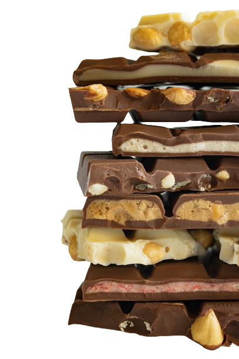

Jessica Mavis Cox written books and published works.
Jessica Mavis Cox is a 88-year-old former television actor who enjoys cycling, drone photography and working on cars. She is creative and kind, but can also be very unstable and a bit stingy.
Jessica Mavis Cox is a 88-year-old former television actor who enjoys cycling, drone photography and working on cars. She is creative and kind, but can also be very unstable and a bit stingy.
 She is addicted to chocolate, something which a friend pointed out when she was 18. The problem intensified in 1953. Jessica has lost four jobs as a result of her addiction, specifically: tea maker, chef at chain restaurant, golf caddy and resident artist at a studio.
She is a Colombian Jedi who defines herself as pansexual. She didn't finish school. She has a severe phobia of buttons
Physically, Jessica is in pretty good shape. She is average-height with walnut skin, black hair and black eyes. She has Due to the chocolate, Jessica looks older than her actual age..
She grew up in an upper class neighbourhood. Her father left when she was young, leaving her with her mother, who was an addict.
She is currently single. Her most recent romance was with an artist called Jamie Yvonne Rowland, who was the same age as her. They broke up because Jamie felt Jessica was too busy for the relationship.